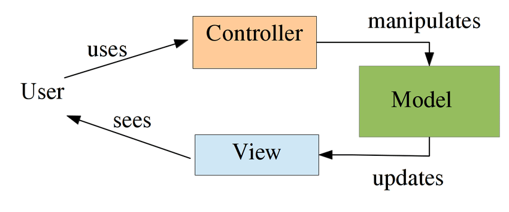
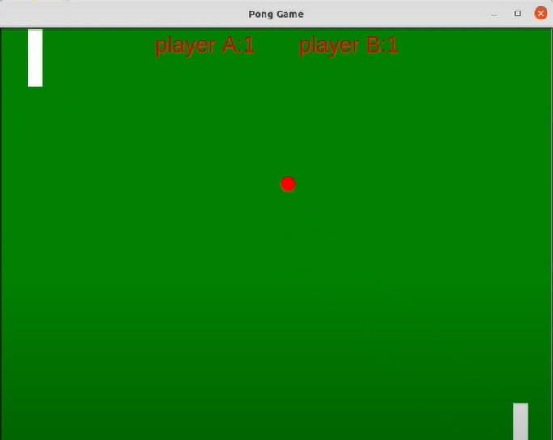

Coding Takes Style
Many software developers and engineers know that there are a few guidelines that should be followed when making a program. These include things like formatting, coding style, and design patterns. These are just some of the many properties that programmers keep in mind when making their programs. Although there are many, this essay will discuss design patterns, what they are, why they are useful, and some examples.

Famous Design Patterns
A design pattern "describes a problem that occurs over and over again in our environment and then describes the core of the solution to that problem, in such a way that you can use this solution a million times over, without ever doing it the same way twice." (Christopher Alexander, 1977). In short, design patterns are archetypes of solutions that can be applied to a class of problems to easily solve them. A few of these famous design patters are the factory design pattern, the singleton design pattern, the observer design pattern, and the model-view-controller(MVC) design pattern. The factory design pattern is a pattern that solves a problem that deals with the creation of objects that are appropriate for certain situations. The singleton design pattern provides a global variable in the programming language that does not support global variables. The observer pattern deals with a set of objects that listen on a subject for change and respond according to the stimulus. The MVC design pattern creates a user interface that is separate from the data that the user interface represents through a controller.
Who needs Design Patterns
Design patterns can be used for a ton of problems. What makes the idea of design patterns as a whole important is that each design pattern creates a template solution to a wide variety of problems, all of which have a common problem. This is important to designing programs and creating code because these design patterns can provide fast and reliable solutions to problems that you have which align with the classified problem. By having patterns that are template solutions to a range of problems that match a schema.
When is it Useful?
The only two design pattern that I have used are the singleton design pattern and the observer design pattern. The singleton design pattern is a pattern that creates global variables in a programming language that does not support global variables. The time I used it was in an program where I recreated the arithmetic functions to compute simple problems, known as a scientific calculator. In the code, it did not make sense to use a new calculator every time an arithmetic call is made, therefore a singleton class object for the calculator was created and every arithmetic problem used the same calculator object to complete itself.
When I used the observer design pattern, I had dealt with a GUI video game. This video game used input handlers that observed the keyboard to manipulate the elements in the game according to the input of the keyboard and mouse. The reason that the observer design pattern was used over a simple coupling of responses and activators was the flexibility of the responses to a single input allowing the code to be much shorter.